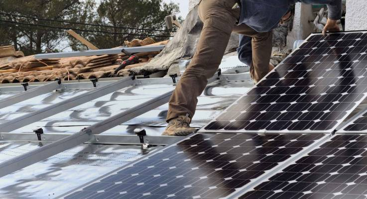
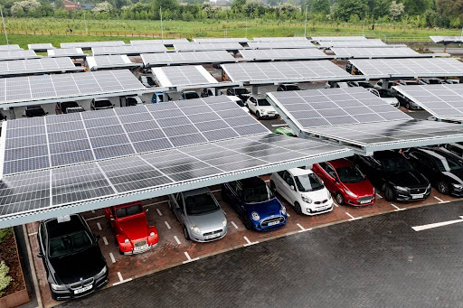
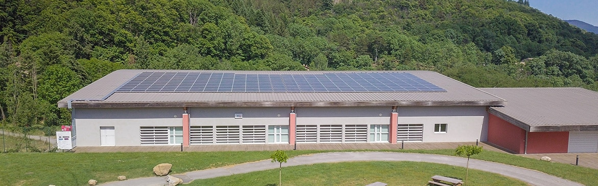
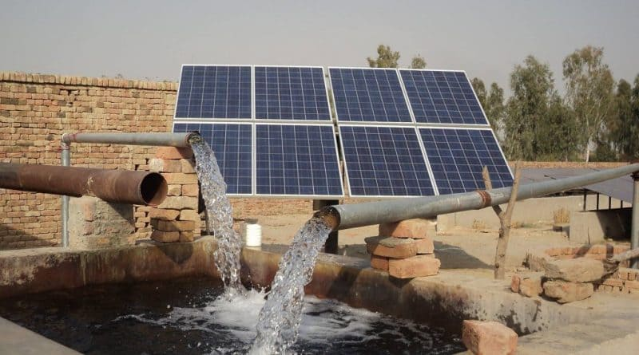

Accueil
À propos de nous |
Nos Services |
Nos Projets |
Nous Contacter
Nos Projets
Chez Agadir Solar, nous sommes fiers de notre engagement envers l'excellence et l'innovation dans le domaine de l'énergie solaire. Notre équipe d'experts a réalisé une multitude de projets variés, allant de l'installation de systèmes photovoltaïques résidentiels à la mise en place de solutions solaires à grande échelle pour des entreprises. Chaque projet que nous entreprenons est guidé par notre objectif de maximiser l'efficacité énergétique tout en minimisant l'empreinte carbone.
Nous avons collaboré avec des clients de divers secteurs, y compris l'hôtellerie, le commerce de détail et l'industrie. Chaque partenariat est basé sur une compréhension approfondie des besoins uniques de nos clients, ce qui nous permet de concevoir des solutions sur mesure qui s'intègrent parfaitement dans leurs infrastructures existantes. Nos projets sont non seulement conçus pour être esthétiques et fonctionnels, mais aussi pour être durables et rentables. Grâce à notre approche proactive de la maintenance et du suivi, nous garantissons que chaque installation continue de fonctionner à son plein potentiel pendant de nombreuses années.
Parmi nos réalisations les plus notables, nous avons récemment achevé l'installation d'un système de panneaux solaires pour un complexe hôtelier de luxe à Agadir, qui a permis de réduire leurs coûts énergétiques de plus de 30 % tout en offrant aux clients une expérience respectueuse de l'environnement. Nous sommes également en train de déployer une solution solaire innovante pour un centre commercial, qui comprendra des bornes de recharge pour véhicules électriques, démontrant ainsi notre engagement à soutenir la transition vers un avenir énergétique durable.
Quelques Projets Récents
Complexe Hôtelier de Luxe à Agadir
Installation de panneaux solaires pour réduire les coûts énergétiques.
|  |
- Réduction significative des coûts d'énergie: L'installation de panneaux solaires a permis au complexe hôtelier de diminuer ses factures d'énergie de manière substantielle. En utilisant l'énergie solaire pour alimenter l'éclairage, la climatisation et d'autres équipements essentiels, l'hôtel a pu réduire sa dépendance aux sources d'énergie conventionnelles, ce qui entraîne des économies significatives sur le long terme.
- Amélioration de l'efficacité énergétique: En intégrant des technologies solaires avancées, le complexe a non seulement optimisé sa consommation d'énergie, mais a également modernisé ses installations. L'utilisation de panneaux solaires photovoltaïques, combinée à des systèmes de gestion de l'énergie, a permis de maximiser l'utilisation de l'énergie produite sur place, réduisant ainsi le gaspillage énergétique. Des audits réguliers et des systèmes de surveillance garantissent que l'hôtel maintienne un niveau élevé d'efficacité énergétique.
- Contribution à un avenir durable: Ce projet souligne l'engagement du complexe hôtelier envers la durabilité environnementale. En réduisant son empreinte carbone grâce à l'énergie solaire, l'hôtel participe activement à la lutte contre le changement climatique. De plus, il inspire d'autres entreprises de la région à envisager des solutions d'énergie renouvelable, favorisant ainsi une transition vers des pratiques commerciales plus durables au sein de la communauté d'Agadir.
|
Centre Commercial à Agadir
Mise en place d'une solution solaire intégrant des bornes de recharge pour véhicules électriques.
|  |
- Installation de bornes de recharge pour véhicules électriques: Dans le cadre de son engagement envers l'innovation et la durabilité, le centre commercial a installé plusieurs bornes de recharge pour véhicules électriques. Ces stations de recharge permettent aux clients de recharger leurs véhicules pendant qu'ils font leurs courses, offrant ainsi une commodité appréciée. De plus, ces installations encouragent l'adoption de véhicules électriques, contribuant ainsi à la réduction des émissions de gaz à effet de serre dans la région.
- Réduction de la dépendance aux énergies fossiles: En intégrant une infrastructure de recharge pour véhicules électriques alimentée par des panneaux solaires, le centre commercial réduit sa dépendance aux sources d'énergie fossiles. Cette initiative favorise l'utilisation d'énergie propre et durable pour alimenter les véhicules électriques, ce qui diminue les émissions de carbone associées aux combustibles fossiles. Cela permet également de soutenir la transition énergétique vers des alternatives plus vertes dans le secteur du transport.
- Renforcement de l'image écoresponsable du centre commercial: L'initiative d'installation de bornes de recharge pour véhicules électriques, associée à une solution énergétique solaire, renforce l'image du centre commercial en tant que leader dans le domaine de la durabilité. En mettant en avant son engagement envers des pratiques écoresponsables, le centre attire une clientèle de plus en plus soucieuse de l'environnement. Cela crée non seulement une image positive, mais encourage également d'autres entreprises à adopter des pratiques similaires, contribuant ainsi à un changement positif au sein de la communauté.
|
École Locale
Installation d'un système solaire pour alimenter les besoins énergétiques de l'établissement.
|  |
- Alimentation complète des besoins énergétiques de l'école: L'installation d'un système solaire a permis à l'école de satisfaire l'ensemble de ses besoins énergétiques, y compris l'éclairage des salles de classe, le fonctionnement des équipements informatiques, et les installations sportives. Cela garantit un environnement d'apprentissage adéquat, même pendant les périodes de forte consommation d'énergie, et réduit la dépendance aux réseaux électriques traditionnels.
- Création d'un environnement d'apprentissage durable: Grâce à l'énergie solaire, l'école a pu adopter une approche plus durable dans ses opérations quotidiennes. Les élèves sont exposés à des pratiques écologiques, et cela favorise une culture de la durabilité au sein de l'établissement. De plus, les économies réalisées sur les coûts énergétiques peuvent être réinvesties dans des ressources pédagogiques et des activités scolaires.
- Sensibilisation des élèves à l'importance de l'énergie solaire: Le projet ne se limite pas à l'installation de panneaux solaires; il comprend également des programmes éducatifs qui sensibilisent les élèves aux énergies renouvelables et à leur rôle dans la lutte contre le changement climatique. Des ateliers, des visites de terrain et des projets pratiques sont organisés pour impliquer les élèves et leur permettre de comprendre comment l'énergie solaire fonctionne, renforçant ainsi leur engagement envers un avenir durable.
|
Pompages Solaires
Nous avons également développé des solutions de pompage solaire pour l'agriculture et d'autres applications industrielles. Nos systèmes de pompage utilisent l'énergie solaire pour alimenter des pompes qui extraient l'eau de puits ou de sources, offrant ainsi une alternative durable et économique aux systèmes de pompage traditionnels. Ces solutions sont particulièrement bénéfiques dans les zones rurales où l'accès à l'électricité peut être limité. Grâce à nos installations de pompages solaires, nos clients ont pu améliorer leurs opérations tout en réduisant leurs coûts énergétiques.
|  |
- Systèmes de pompage alimentés par l'énergie solaire: Nos solutions de pompage solaire utilisent des panneaux solaires pour alimenter des pompes qui extraient l'eau de sources ou de puits. Cela permet de réduire les coûts d'exploitation liés à l'électricité, tout en garantissant un approvisionnement en eau constant et fiable pour les besoins agricoles et industriels. Ces systèmes sont conçus pour fonctionner même dans des conditions d'ensoleillement limité, offrant ainsi une flexibilité d'utilisation.
- Alternative durable et économique aux pompages traditionnels: Les systèmes de pompage solaire représentent une solution innovante qui remplace les pompes à essence ou à diesel, réduisant ainsi les émissions de gaz à effet de serre et minimisant l'impact environnemental. En utilisant l'énergie solaire, les utilisateurs bénéficient d'un approvisionnement en énergie gratuit et renouvelable, ce qui entraîne des économies considérables sur le long terme. Ces pompes contribuent également à la durabilité des pratiques agricoles, en permettant un accès à l'eau dans des zones reculées.
- Bénéfique dans les zones rurales avec accès limité à l'électricité: Nos solutions de pompage solaire sont particulièrement adaptées aux zones rurales où l'accès à l'électricité peut être restreint ou inexistant. En fournissant une alternative fiable pour l'irrigation des cultures et l'approvisionnement en eau, nous contribuons à améliorer les conditions de vie des agriculteurs et des communautés locales. De plus, ces systèmes permettent de développer des pratiques agricoles modernes et durables, favorisant ainsi la sécurité alimentaire.
|